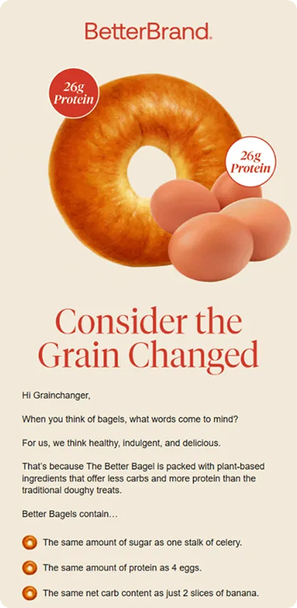
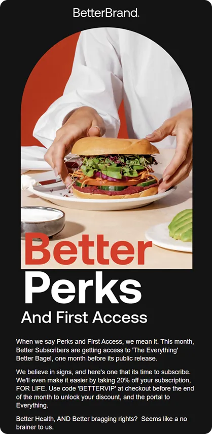
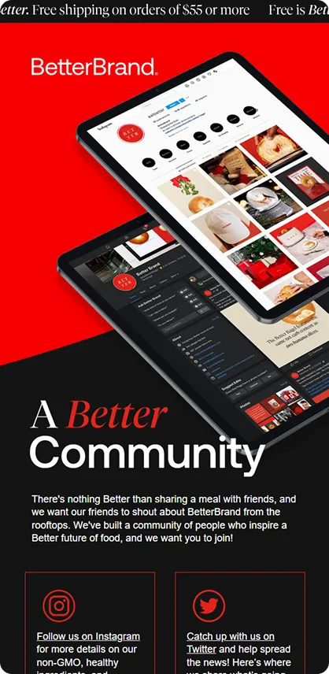

How do you make bagels look this good in an email? For Better Brand, it comes down to bold design, sharp storytelling, and a touch of food tech innovation. Known for reinventing the classic bagel with high protein, low carbs, and plant-based ingredients, the brand brings that same “too good to be true” energy into the inbox.
In this episode of Feedback Friday, Matt Helbig chats with Alissa Taggart and Vira Sadlak from Flowium to explore the strategy behind Better Brand’s standout emails — from welcome flows that educate and convert to sleek subscription and social push campaigns that keep the brand top of mind.
They share how thoughtful design choices, such as live text for accessibility, balanced visuals, and motion-driven storytelling, help create emails that look good enough to eat and perform just as well. If you work in DTC, email design, or food tech branding, this episode is packed with ideas to help you craft emails that engage, convert, and deliver.
TL;DR
- Live text improves accessibility and deliverability
- Visual comparisons make product benefits clear
- Copy and GIFs work together to tell a story
- Directional cues guide focus through the layout
- Dark and light contrasts create premium vibes
- Cross-channel emails strengthen brand recall
🎥 Watch the full breakdown or read the transcript for strategies you can apply to your next campaign.
Matt Helbig: All the emails coming out of this brand that you guys are working on have really stood out to me, and I’m interested in walking through some of them and getting your thoughts.
Alissa Taggart: Yeah, totally. So, perhaps a quick insight into the brand itself. Better Brand created the Better Bagel, which is almost a “too good to be true” version of the bagel. Everyone I know loves bagels. If you don’t, I’m sorry, that’s kind of strange to me. Anyway, bagels are usually high in carbs and sugar, and pretty low in protein. It’s that guilty pleasure where you really want one, you eat it, and then you feel terrible later. With Better Brand, their bagel actually contains 26 grams of protein, 5 grams of net carbs, and 1 gram of sugar. You think about that and you’re like, “Sorry, come again?” And they’re actually good. They’re fluffy and nice, and they kind of taste like a normal bagel. They’re totally plant-based, which is awesome. Better Brand is in the food tech space. Amy Yang is the founder, and she’s a very, very cool woman. If you ever have the chance to read about her, definitely do, because she has one heck of a brain to come up with something like this.
Their focus is on people who are more forward-thinking and innovative, who fit within the food tech world, and who want to live a pleasurable life without guilt, shame, or the unnecessary additives that can be found in many products. People who are focused on living a good life without forsaking or compromising the things they enjoy. Their main focus is on forward thinkers —people who are truly innovative, those who want to break boundaries in a positive way that excites and energizes others. There was a lot of back and forth between our agency team and theirs to fully understand and refine the look and feel of these emails. It took some time, but we eventually arrived. If you check out their website, it’s also really cool.
Whenever we create emails, we strive to strike a balance between reflecting the website and representing what the brand stands for, as a direct replica can feel somewhat boring. We feel like we’ve hit the nail on the head, and it’s great to hear that these emails are really popular on the Really Good Emails website and that you're enjoying them. I'm excited to walk through some of these and discuss the cool elements. Huge shout-out to our senior designer at Flowium, Luis. He’s based in Puerto Rico. The skill this person possesses is amazing. We sent the brand over to him, and we were like, “Please help. We need to revamp what’s going on. We’re going back and forth.” He came back with these designs, and everyone on our team, including the client, was like, “What just happened? This is amazing.” So we ran with it and here we are. Very excited to talk about these.

Matt Helbig: Awesome. Yes, this seems like a welcome onboarding email that walks through their product, and I’m really impressed by the balance between live text and imagery. In a lot of templates we feature from your agency, it’s great to see how much live text you include. Many DTC brands typically end up creating one large Photoshop export and incorporating it into a template, but seeing these utilize live text and offer a bit more accessibility is awesome.
Alissa Taggart: Yeah, there’s a lot of thought behind that. Our timelines tend to be a bit longer than those offered by most agencies, because we focus on bringing the brand to life within an email, while prioritizing deliverability. However, this can be compromised when all emails are image-based. Sometimes the images don’t show, and sometimes the emails get clipped. It becomes pretty problematic. Our designers strive to strike the perfect balance between engaging imagery and live text. That way, the emails flow well, are easier for customers to interact with and look at, are easier to receive, and don’t negatively impact deliverability in the long run. That is a huge focus for us at our agency.
Matt Helbig: Awesome. First off, even this copy, this first name right here, stood out to me. I kept thinking, “Is that my name or not?” But yeah, this is really great copy. And I was like, “Did they really use bagels for the bullet points?” That immediately elevates this email to a new level. Awesome to see.
Alissa Taggart: Yeah, this one’s exciting. And just so you know, this was the original design we created. The client was kind of like, “This feels a little off-brand.” We have a couple of others queued up, but this is really good because you can see the evolution from where we started to where we ended up. I love the simplicity. The background, the bagel bullet points. Several elements throughout the email are noteworthy. It’s interactive and engaging. We break down all the ingredients, not in a boring, back-to-back manner, but in a way that's much more visual for customers.
This part, as well, where you can see the difference between something that’s Better and something that’s Vintage, is awesome too. It is that direct visual comparison for customers. A significant portion of what we observed is that you are dealing with two major camps.
Customers who respond really well to lots of text and plain text, versus customers who respond really well to lots of imagery, understand in more depth what the brand is about, what the product is about, and how it looks in comparison to other things. The comparison emails and elements that we add to many of our clients’ emails are always where people engage the most, which is really interesting. And it makes sense. We always want to see why we should buy this versus just buying what we’ve always bought. It is certainly helpful for the consumer.
Vira Sadlak: It’s the fun fact portion for me. I love all the bagel bullet points, like “the same amount of sugar as one stalk of celery.” I’m like, what? How is that even possible? It’s very informational, and that’s what I like about it. Usually, brands neglect that first email. They treat it more as, “Hey, thank you for subscribing, you’ve been added to the list.” However, this is your chance to tell more about your brand and its values, to get your customers hooked. Don’t underestimate it. This email is one where we see a lot of conversion in those very first few emails of the welcome flow.
Alissa Taggart: And I love the GIF at the top, the way the bagel rolls in, kind of like, “Hi, I am here,” and then underneath it says, “Consider the grain changed,” and you’re like, whoa, this bagel has made a statement. I love GIFs that play along with the copy. That always makes it better.
Vira Sadlak: Yeah, and the copy is just as important as the design in this one, and in all of them. They did a great job staying on point with the brand's voice and visual representation.

Alissa Taggart: I know. That’s another thing we focused on extensively with the client. They were like, “We need these emails to look good enough to eat,” and I think Luis was like, “Check.” You can see the evolution of where we went with the design and the emails. It is not necessarily darker, but there is a certain mystery to the black, which is fused with the red. It makes it edgier and more mysterious. There is a cool vibe to it. It feels like, “I have to buy this bagel so I can be part of the cool kids club who are eating these bagels too.”
The imagery helps. There’s one picture I always think of, a bagel with butter and sliced bananas with honey drizzled all over it. You look at it and you’re like, this is amazing. That is what we wanted to focus on. There is the edginess and the innovation side of things, where eating these bagels puts you in that camp. But they are also delicious. We don’t want to take away from that by hyper-focusing on “it’s healthy.” When people see green all the time, you’re kind of like, okay. But when you see green with delicious, then you’re like, 'Aha, we've found the sweet spot.'
Matt Helbig: Yeah, it definitely creates some bagel FOMO and makes a healthier option really appealing. You do a really good job of creating a sense of wanting to be part of this product. Everything is extremely clean, with a well-organized footer and clear text and imagery. Very nice work on this.
Alissa Taggart: Luis did this interesting thing with the arrow. When I first saw it I was like, I don’t really get it. However, as you scroll through the email, it becomes clear. It makes you focus on whatever the arrow is pointing at, which is important information. This email is intended to inform recipients about the benefits of our subscription. We’re also offering a subscription discount to sign up. This was leading up to National Bagel Day, which I think was January 15. I don’t know why I remember these random dates, but here we are. So the arrow, I wasn’t sure at first. Then, when I scrolled through and eventually received it in my inbox, I was like, This small detail makes all the difference. Without it, I’ve seen it, and you kind of get lost. You see “Subscriber perks,” and there are four bagels, and you wonder where you are going. With the arrow, it makes sense.
Vira Sadlak: Yeah, it totally makes sense. I mean, yeah, especially in the mobile version, right? When all you can see is the bagel and you’re like, okay, I guess it’s the end of the email. However, the arrow design also looks visually appealing. It has that white color.
It puts everything together, links everything together, and combines the black, the white, the red, and a hint of white. Yeah, it’s beautiful. It’s very high-end. You know what I mean? And that’s pretty much the message that we are trying to deliver with this brand.
Matt Helbig: Yeah. So you mentioned maybe your timelines are taking a little bit longer. How long does it usually take to make an email like this? Because, to be honest, the desktop and mobile versions look fantastic and seem really well-optimized. From kickoff to the email actually going out, how long would you say that is?
Alissa Taggart: I would say it’s anywhere between three to four weeks. That’s our typical timeline, from creating the campaign strategy to rolling it out to our entire team. However, in reality, if our team worked on only one client, it would probably take us three days. This is because, for designers, creating a campaign from scratch and producing something beautiful like this typically takes around two to three hours. We are currently working on condensing timelines within our agency. However, with this client, we often do a lot of last-minute work for them. Shout out to Amy and Rachel. I love working with you guys, by the way, so there’s no offense in what I’m saying. But because they’re such a fresh new company, everything is moving so quickly, and they’re putting all these things in place because they want to maximize all the attention they’re getting right now, which is totally understandable.
So a lot of their emails actually... for example, we have one email that we’re starting now. I just pushed the copy today, and it needs to go out next Thursday. And it’s doable. I think our team gets a little stressed out with me sometimes, but we do make exceptions for certain companies that are new, fresh, and moving fast. It’s not something that we like to do as a long-term habit, but yeah, it is doable. With many of these Better Brand campaigns, we tend to turn things around much quicker than our normal timeline.
So it’s immensely impressive. It’s a big part of it. Yeah, I wish I could take any credit for it. I literally can’t take any credit whatsoever. I come up with something like, “We should do a campaign for subscribers,” and then I send it to our copywriter, and he comes up with this amazing idea. Then it gets sent to Luis in design, and I’m like, how did you guys do this? I wrote three words, and you guys just got it. It’s amazing, and it's all happening in such a short time as well.
Vira Sadlak: Right. A significant portion of that time is also spent on testing. We test every email thoroughly. Pretty much everyone who works with email double- or triple-checks everything. We run it through, I think, Email on Acid. I’m not sure if we’re still using it or not, but we’re checking every email we send — the flow, the campaign. We double-check all the links, send ourselves a preview, and test it on various devices, including tablets and phones, as well as different screen designs. It’s super important to do all that because there’s always some little thing that makes all the difference, right?
Matt Helbig: Yeah, it definitely shows. We have two last ones, if you could walk through them quickly. Alright, so this one is a social media push email, which is becoming more popular. I feel like we’ve been seeing dedicated social media and, even more recently, SMS-dedicated emails. So maybe, why would someone want to send an email like this?

Alissa Taggart: As much as it may upset us to think, email isn’t always for everyone. It’s really beneficial for us to have the opportunity to direct customers or potential customers to different marketing avenues or channels, so they can see everything you’re doing and how engaged you are. But also, if for whatever reason they opt out of email or unfollow you on Instagram, there are still two or three other channels where they’re connected to you. So you’re still communicating with them no matter what.
Ultimately, you want to be top of mind for these customers. So, even if I’m not buying a Better Bagel every single day, seeing them every day on my Instagram feed makes a lasting impression in my mind. Even when I’m not purposefully thinking about them, they pop up. Now, when I see a bagel, I automatically think Better Brand — A, because I work with them, but also because I see them so frequently on different marketing channels. They’re always top of mind, to the point where now I’m talking to my husband like, “We need to buy a Better Bagel. We need to.” And he’s like, “Why?” And I’m like, “I don’t know, we just need to. My subconscious is telling me because I’ve had so many touchpoints with the brand.”
That definitely helps. The more touchpoints, the better. Vera and I have discussed this extensively on our podcast as well. It takes, I think, up to 17 touchpoints — and that’s for lower-value items — for someone to finally buy. And the touchpoint isn’t just going to happen in email. It’s going to happen in email, on Facebook, Instagram, TikTok, Twitter, word of mouth, direct mail — any way that you can connect with the consumer, you want to do it. So yeah, this email is interesting. At first, we thought, “Social push, okay,” but then we actually did it, and there was a really good response. Their Instagram following is increasing pretty drastically. They’re very active on their stories, too. Social media gives these brands the opportunity to be more witty, funny, and sly, whereas email requires a more professional tone. You can still be funny, obviously, but you’re trying to be more like, “This is who we are.” Then on Instagram, you can be like, “Yo, what up girl?” — like sliding into your DMs kind of thing. So it’s fun because people can see the different personalities of your brand.
Vira Sadlak: But it also gives you a sense of community, too, which you can’t necessarily get through email. On Instagram, you can engage with other bagel fans and with the brand directly. It puts a human face on the brand and on the community, which is very important. I really like, Alissa, was it you or I — I think it was someone from the conference — who compared the brand’s different marketing platforms. They said that email marketing is like the good guy your mom wants you to marry.
Alissa Taggart: It was Robbie Fitzwater. He was actually a speaker at the conference. He said that email marketing is like that guy your parents really wanted you to date in high school, but you didn’t want to, because he wasn’t the sexy, cool guy with the leather jacket and the motorcycle. Email marketing was like the nerdy guy who’s obviously going places but keeps to himself, doesn’t go out much on Saturday nights, a solid good guy. And you’re just like, no. Then, when you grow up, you realize you should have dated that guy.
Vira Sadlak: And social media is that other guy.
Alissa Taggart: Yeah, the bad boy kind of guy, you know?
Matt Helbig: Alright, well last one. This exit intent offer — I think I might have actually gotten an email like this or a similar one — is kind of like an abandoned cart email, right?
Alissa Taggart: Sort of. The way the exit intent offer works for us is that we only allow it to appear on a product page. It’s only when someone has shown a legitimate intent to purchase, as evidenced by their presence on a product page, not just browsing through the site. So, if you’re on a particular product page and then move your mouse or cursor off the browser with the intention to exit, a pop-up appears. For Better Brand, the pop-up offer is “Buy three, get one free.” When someone opts in, they get this email. This is the first email in the flow. Then, we implement a stacked incentive. The first two emails will be this one and a reminder of the offer, as our offers typically last only 48 hours.
Then we include a welcome email or more information about the brand to help people take the next step. The next two emails will include a better incentive, such as free shipping or a completely different offer altogether. That will be the offer, and then a reminder will follow. That’s usually how we frame our exit intent. So this sort of acts like a welcome flow, because people didn’t opt in through the homepage pop-up. It’s still a crucial time to put your best foot forward and showcase your brand to customers.
Matt Helbig: Yeah, just quickly on the design of this one, I really like how you called out this code here. I think that’s really smart, almost making it the same pill-style CTA that really matches and brings your eye down. I also appreciate that, in this case, you left-align the text rather than centering it, simply because it’s a bit longer. I’m a big fan of this type of email. How important are emails like this? Do most brands need to have some sort of intent offer or abandoned cart email to capture those sales?
Alissa Taggart: The exit intent flow tends to be one of the top three performing flows for all of our clients, revenue-wise. Engagement as well, but revenue — and that’s what clients care about — is like, where’s the money at? Exit intent is definitely one of those places, as it’s usually an offer given again to someone who already has the intent to purchase. They’re right there, and then you offer them that as a last resort, sort of like, 'Please stay on the site, make a purchase, here you go.' And again, it makes the consumer work a little bit harder for the discount because they’ve actually had to get to the product page. Not that it takes that long — it’s, what, three seconds to go from a homepage to a product page — but they’ve had to do a little more research and look through the site a bit more, to really go through the product description, details, and so on.
I would argue that this is a crucial aspect of any email marketing strategy from a holistic perspective. Out of every single flow, the most important, in my opinion, would definitely be a welcome flow, because you want to make sure customers know what they’re opting into. Then, for me, the next steps would be an abandoned cart flow and a post-purchase flow. That’s my own personal ranking — but honestly, it’s like picking a favorite child. It’s hard.
Vira Sadlak: It’s literally picking the favorite one. But also, it’s not the same for every brand. There are some brands that don’t do discounts at all, for example, but you can still give some sort of incentive to your customers. Maybe it’s something like exclusive desktop wallpapers — I think it was Glossier who did that — or a PDF, or an invitation to an exclusive Facebook group that’s only available to certain customers. You want to give them some sort of incentive, but obviously, it all comes down to your overall marketing strategy.
Alissa Taggart: And it doesn’t always have to be an offer, like Vira said. It can be something that gives people an inside scoop into the brand, so they have a deeper understanding. For example, this is more service-based, but many personal trainers with websites will use exit intent not as an offer, but as exit intent content. Something like, “Hey, before you leave, make sure you get your free three-day guide on how to lose 10 pounds,” or whatever it is. That’s a way for them to stay engaged, receive your email, and also provide some value in return. So really, the exit intent is just an additional way to transactionally switch value. Like, I will give if you give me your email so I can contact you, and I will give you this thing. That’s really what it’s all about. The exit intent just provides another option for that as well.
Matt Helbig: Fantastic. Thank you so much for reviewing these emails. How can people maybe work with you? I’m not sure. Are you still accepting new clients?
Alissa Taggart: Yes, totally, totally, totally. Visit our website, and then, when you navigate to “About Us,” you can schedule a call with our team. We’re very straightforward. The way we function is that if we don’t think we’d be a good fit for you, we won’t work with you. As much as we like making money, it’s really important that we’re the right fit. Next, you’ll hop on a call with a member of our sales team. They’ll walk you through what you’re doing as a brand, what your goals are, and if it’s something we can viably add value to, then yes, we can move forward from there. But if not, we’ll let you know right off the bat, like, “Hey, this is probably not a good fit. Here are some other agencies that we’d recommend.” Ultimately, for us, email marketing is extremely important, as most of you are aware. However, if we can’t do it, we’ll offer someone else to do it for you, because everyone should have a solid email marketing strategy in place.
Matt Helbig: Great. Well, thank you so much, Alissa and Vera. Have a fantastic rest of your day. Thank you, it’s been a real joy to talk to you about these emails. Thank you.